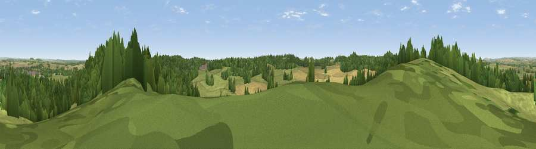

Viewpoint near Sturminster Marshall
#33253 in England · top 64% of its area beats it · near Sturminster MarshallWhere it is
The exact computed spot (SY 94375 97775). Click the marker for map links.
The view, rendered

A 360° render of this exact spot computed from the terrain model, tree cover and land cover — summer colours, afternoon light, calibrated against photographs of famous viewpoints. Real trees, hedges and buildings will differ in detail.
The panorama
Grey silhouette: terrain skyline in each direction (720 bearings, Earth curvature and refraction included). Dashed green: skyline with trees (+15 m) and buildings (+8 m) as obstacles. Blue strip: how far the ground is visible on each bearing.
Where the view opens
Wedge length = distance to the farthest visible ground on that bearing (vegetation-aware). Rings at 10, 25 and 50 km.
What fills the view
50% grassland · 31% woodland · 18% cropland · 1% built-up
Angular shares of the visible panorama (visual magnitude), not map area. Landscape diversity 0.47 (0–1 Shannon).
Key numbers
More beautiful places nearby
The staircase of upgrades: each row has a higher view potential than everything closer. Driving times are estimates from straight-line distance, calibrated against real road routing — check an actual route before setting out.
| Place | Direction | Drive | Score |
|---|---|---|---|
| Viewpoint near Sturminster Marshall | W · 1 km | ~3 min | 50.3 |
| Viewpoint near Upton | SE · 4 km | ~10 min | 61.0 |
| Viewpoint near Milton Abbas | WNW · 15 km | ~26 min | 64.2 |
| Viewpoint near Kimmeridge | S · 16 km | ~28 min | 82.9 |
| Viewpoint near Kimmeridge | S · 16 km | ~29 min | 84.1 |
| Whiteway Hill | SSW · 18 km | ~31 min | 85.0 |
| Viewpoint near Kimmeridge | S · 18 km | ~31 min | 86.6 |
| Rings Hill | SSW · 19 km | ~32 min | 87.5 |
50.77952, -2.08115 · source: screening · position refined by local search. Computed location — check access rights before visiting.